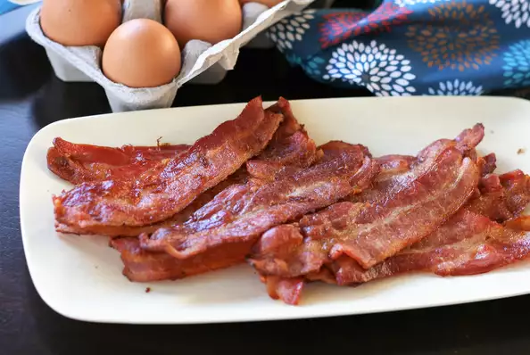

Bacon in the Oven

Description
- As the title suggest, crispy oven cooked bacon.
Ingredients
- 16 slices of bacon
Steps
-
- Preheat the oven to 375 degrees F (190 degrees C).
- Line a rimmed baking sheet with parchment paper and add
bacon slices in a single layer.
- Bake in the preheated oven for 20 minutes. Flip, bake until
crispy, about 10 minutes longer.